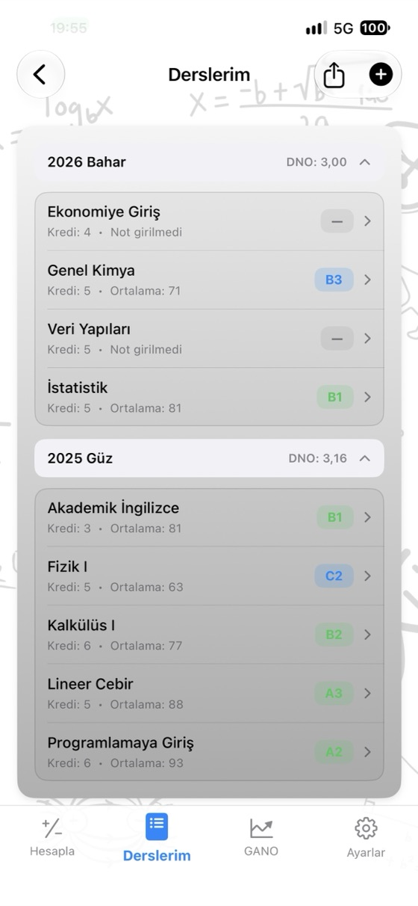
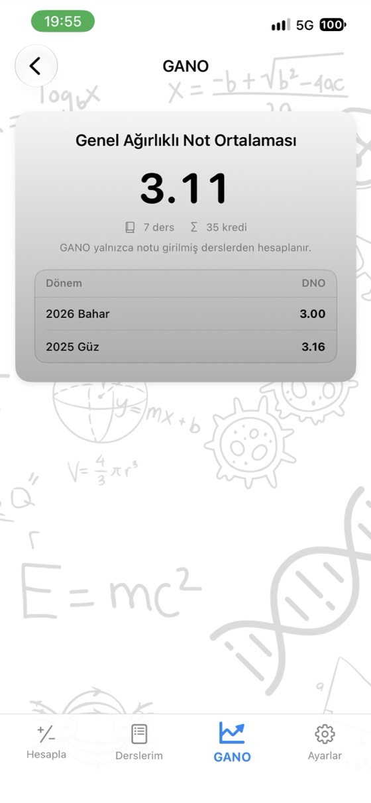
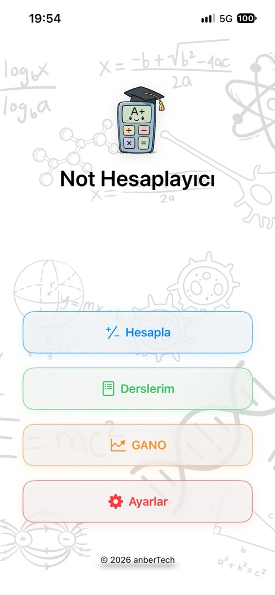
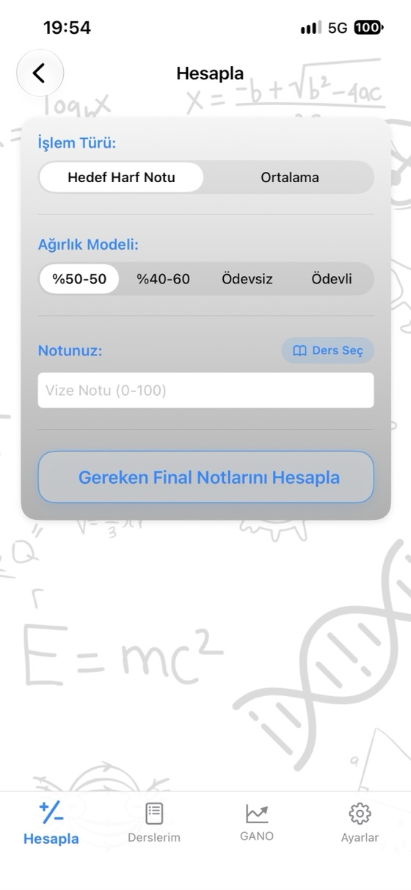
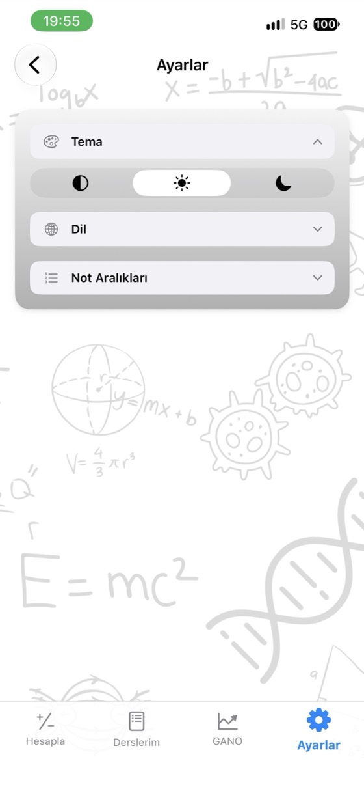

Notunu hesapla,
geleceğini planla.
Vize–final ortalaması, geçmek için gereken final notu ve GANO tek uygulamada. Reklamsız, hesapsız, tamamen çevrimdışı.
- ✓ Ücretsiz
- ✓ Reklamsız
- ✓ Hesapsız
- ✓ Çevrimdışı


Hemen hesapla
Uygulamayı indirmeden burada dene. Değerleri değiştir, sonuç anında güncellensin.
Final ağırlığı: 60%
Final ağırlığı: 60%
Ücretsiz hesaplayıcılar
Uygulamayı indirmeden tarayıcında kullan. Kayıt yok, girdiğin notlar hiçbir yere gönderilmez.
Neden Not Hesaplayıcı?
Ortalama hesabı
Vize, final ve ödev notlarını ağırlıklarıyla gir; ortalamanı ve harf notunu anında gör.
Gereken final
Her harf notu için finalden en az kaç alman gerektiğini tek ekranda gör.
GANO takibi
Derslerini dönem dönem kaydet; dönem ve genel not ortalaman kendiliğinden hesaplansın.
Kendi not skalan
Harf notu aralıklarını ve katsayıları üniversitene göre düzenle.
PDF not dökümü
Derslerini ve ortalamanı tek dokunuşla PDF olarak paylaş.
17 dil
Türkçe, İngilizce, Almanca, Japonca, Arapça, Kürtçe ve daha fazlası.
Gizlilik öncelikli
Hesap yok, reklam yok, takip yok. Verilerin yalnızca cihazında kalır.
Çevrimdışı
İnternet gerekmez; sınav haftasında, kütüphanede, her yerde çalışır.
Ekranlardan bir bakış



Sıkça sorulan sorular
Vize final ortalaması nasıl hesaplanır?
Her notu kendi ağırlığıyla çarpıp toplarsın. Vize %40, final %60 ise: ortalama = vize × 0,40 + final × 0,60. Örneğin vize 62, final 75 ise ortalama 62 × 0,40 + 75 × 0,60 = 69,8 olur. Ödev varsa onun ağırlığı da eklenir; ağırlıkların toplamı 100 olmalıdır.
Dersi geçmek için finalden kaç almalıyım?
Gereken final = (hedef ortalama − vize × vize ağırlığı) ÷ final ağırlığı. Vize 55, vize ağırlığı %40 ve geçme notu 50 ise: (50 − 22) ÷ 0,60 = 46,7, yani finalden en az 47 alman gerekir. Not Hesaplayıcı bunu her harf notu için ayrı ayrı hesaplar.
GANO nasıl hesaplanır?
Her dersin harf notu katsayısını (AA = 4,00, BA = 3,50 …) o dersin kredisiyle çarparsın, bunları toplayıp toplam krediye bölersin. Sonuç 4 üzerinden genel not ortalamandır (GANO / AGNO).
Harf notu aralıkları her üniversitede aynı mı?
Hayır. AA–FF ve A1–F1 sistemleri yaygındır ama not aralıkları ve katsayılar üniversiteden üniversiteye değişir. Uygulamada skalanı kendi üniversitene göre düzenleyebilirsin.
Final barajı nedir?
Bazı üniversitelerde ortalaman yetse bile finalden belirli bir notun (ör. 30, 45 veya 50) altında alırsan dersten kalırsın. Hesaplayıcıda barajı girersen gereken final notu buna göre gösterilir.
Not Hesaplayıcı ücretsiz mi?
Evet. Uygulama App Store'da ücretsizdir; reklam, abonelik ve uygulama içi satın alma yoktur. Bu sayfadaki hesaplayıcılar da ücretsizdir.
Notlarım nerede saklanıyor?
Yalnızca kendi cihazında. Hesap açman gerekmez, hiçbir veri sunucuya gönderilmez. Web hesaplayıcıya girdiğin notlar da tarayıcından çıkmaz.
Android sürümü var mı?
Android sürümü yakında Google Play'de. Şu an iPhone ve iPad (iOS 17.6 ve üzeri) için App Store'da.
Bütün derslerini tek yerde takip et
Ücretsiz. Reklamsız. Hesapsız.